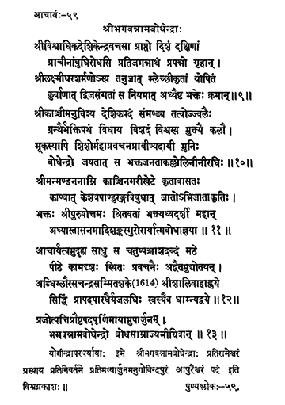

59. आचार्य - 59 - श्रीभगवन्नामबोधेन्द्राः
श्रीविश्वाधिक ••• क्रमात् ॥ ११८ ॥
श्रीकाञ्चीमनुविश्य ••• नीरधिः ॥ ११९ ॥
श्रीमन्मण्डननाम्नि ••• बोधाज्ञया ॥ १२० ॥
आचार्यत्वमुदूह्य ••• धाम्न्याद्वये ॥ १२१ ॥
प्र्जोत्पत्ति ••• बोधसाम्राज्यमीयिवान् ॥ १२२ ॥
बोधेन्द्रा ••• विश्वप्रकाशः ॥
This preceptor (Śrī Bhagavannāma Bodhendra) under the directions of Śrī Viśvādhika came to south; while staying in the house of Jagannātha Kavi, son Śrī Lakṣmīdhara at Jagannātha pini on the shores of Eastern Sea. he sanctified by enjoining expiatory acts based on bhakti to the Brahmin woman polluted/molested by a mleccha.
May preceptor sage Bodhendra entering into Kāñci and embellishing the preceptor-ship, erecting an elaborate path of devotion for the emancipation of all in the Universe by writing excellent works highlighting the concepts (of Bhakti), he who bestowed eloquence even to a dumb child, the ocean with devotees as waves, shine well.
Born of Keśavapāṇduraṅga, an eminent scholar of Kaṇvaśākhā, residing in the small village called Maṇḍana near Kāñci, the virtuous devotee, noble (great) in guiding people resorted to him to the path of bhakti, adorned the seat of the great Preceptor, Śrī Śaṅkara, under the directions of Śrī Ātmabodha.
He carried out preceptor-ship ably in the Maṭha for fifty-four years and remained in Kāmakoṭi Pīṭha highlighting Advaita through lectures/discourses, the ocean of courage, attained his own non-dual abode in the Śalivaha era 1614.
Śrī Bhagavannāma Bodhendra reached the empire of enlightenment near Madhyārjuna Kṣetra on the full-moon day of the month of Bhādrapāda in the year Prajotpatti.
That this revered preceptor also known as Yogīndra travelled to Rāmeśvaram and on his return attained siddhi at Govindapuram near Madhyārjuna is a well--known fact.
